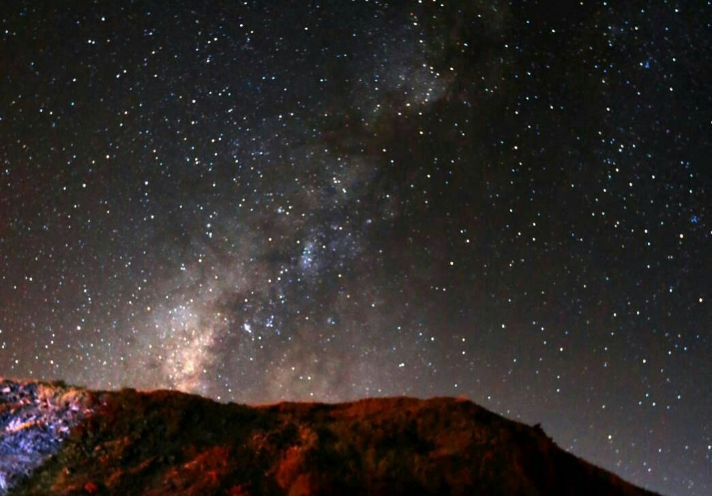

我們自迷航折返
──天文研究社
「這學期轉進了21個！」社長在接受採訪時合不攏嘴地說。如果傳言屬實，那麼今年便是天文社繼某屆因為社長太正而爆社後的再一次復興。

每年寒、暑假，指導老師──曾世任老師都會帶領天文社的同學們上合歡山、大雪山等低光害處觀星，現場一字排開的望遠鏡皆是從地科教室後方價值上百萬的各式望遠鏡中挑選攜出的。在低溫中，學生們嫻熟地組裝線材，各式電腦校正的操作步驟也絲毫不馬虎，如此細心準備，只為了在入夜後能捕捉到肉眼難見的星系與星雲。
「我永遠忘不了那片有著燦爛銀河的星空！」社員們時常這麼感嘆道。
星幕下的人們成了渺小的存在，如此視覺上的美感衝擊，讓他們與眼前的這片星海定下了成為星空之子的美麗約盟。
在松高，天文社之所以能夠歷久不衰，一大部分原因即在於無盡星海的那份謎樣未知，成功挑起了學生們欲一探究竟的渴望。當直視的對象不再是地面生活的繁雜，或是有別於常駐天頂的太陽與月亮，而是抬頭後肉眼可見的獵戶座、天蠍座、夏季大三角，乃至透過望遠鏡即可神遊其中的星系與星團，人的視野就此直抵百萬光年之外，想像力也從課本出牢，在星河的邊疆奔馳。
此為部分內容，更多關於天文社的介紹就在松山青年29期校刊《浮生抗世》